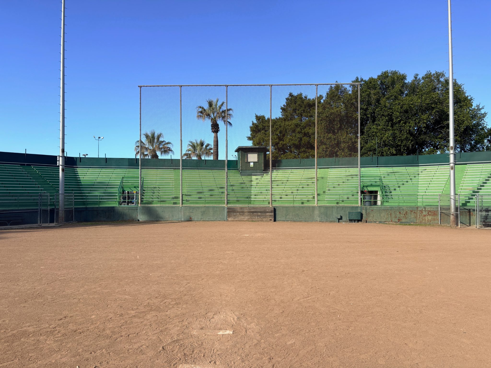
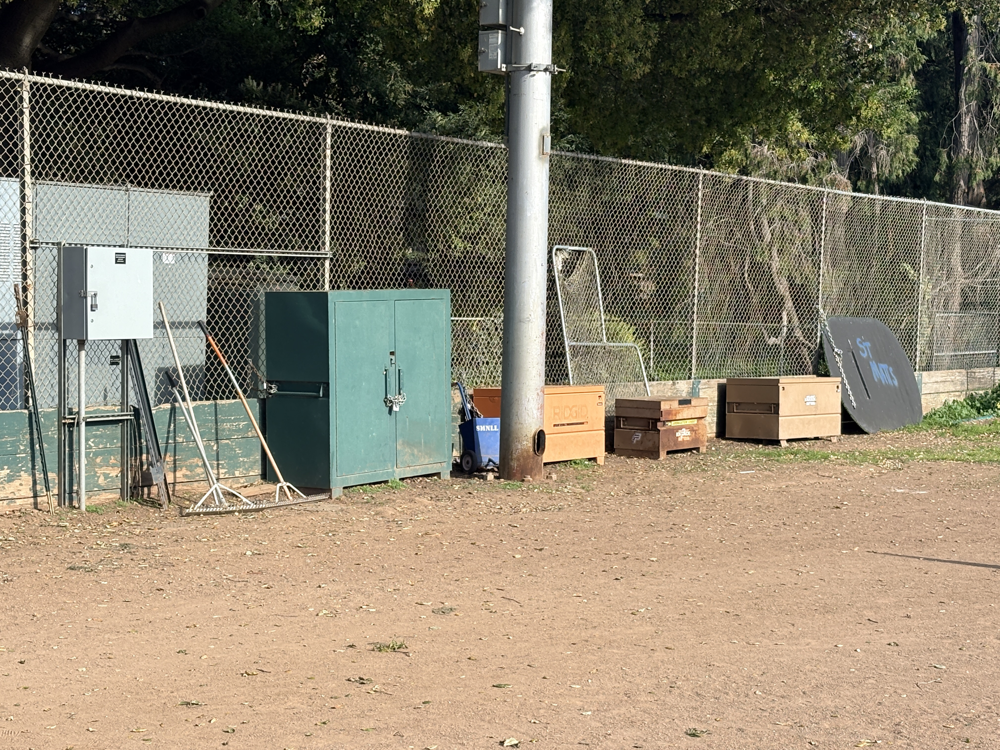
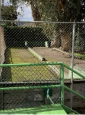
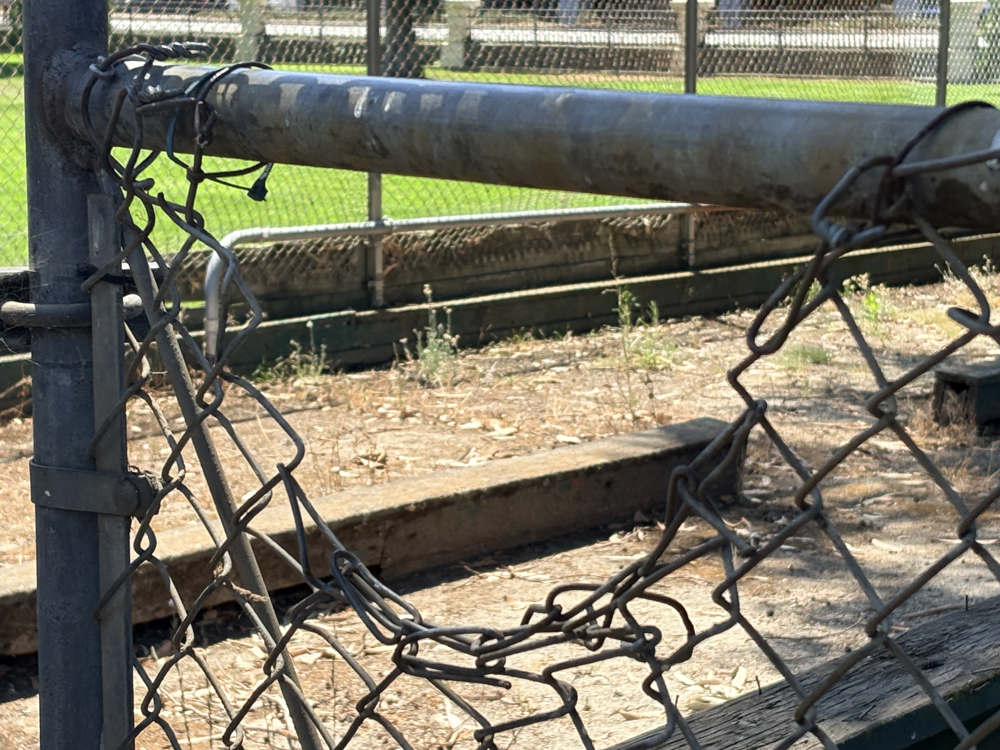
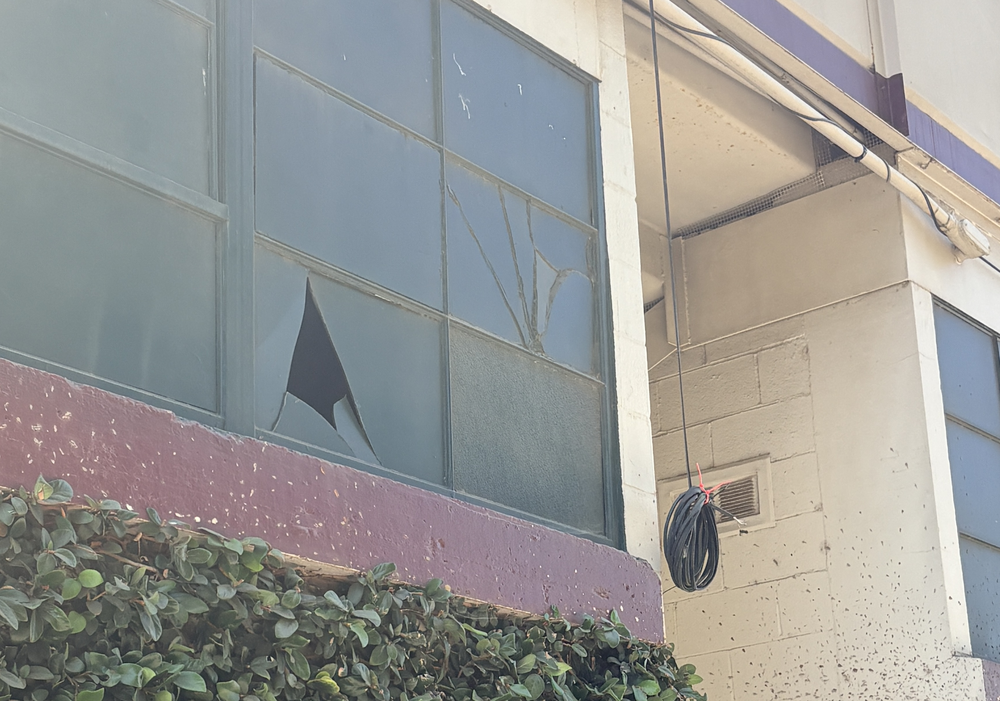
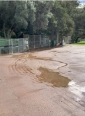
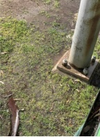
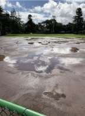
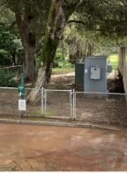
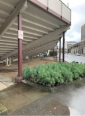

Fitzgerald Field has long been part of Central Park in San Mateo. A community-led effort is underway to explore what this space could become—with input from residents, neighbors, and local stakeholders.
This is an early-stage, grassroots initiative focused on listening, learning, and understanding what the community values most—and what role this historic ballpark might play in the future.
Be Part of the ConversationFitzgerald Field has been part of San Mateo for generations.
Today, the facility shows clear signs of age and offers limited functionality—and for many, it has quietly faded from everyday use.
How can the ballpark best serve the community in the years ahead?

At this stage, the focus is simple—we aim to:
The City of San Mateo is aware of this outreach effort. Insights and ideas generated will help inform future planning discussions, including the Downtown Specific Plan process to begin in 2027.
San Mateo continues to grow, and the demand for quality community space continues to increase.
At the same time, Fitzgerald Field remains underutilized relative to its potential.
Before anything is considered, we are looking for the community to weigh in:
If you have thoughts, ideas, or questions—we’d like to hear from you.
If you’re interested in helping move this effort forward, we’d welcome that as well.
And if you or your organization would consider providing financial support, we’re beginning those conversations too.
All outreach at this stage is informal and exploratory.
People who believe Fitzgerald Field is worth preserving and improving.








Fitzgerald Field has a long history in San Mateo.
What comes next is an open question—and one that starts with the community.
This Diamond Is a Gem